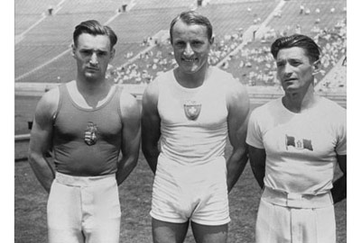

Georges Miesz (SUI)
1928 Olympic AA Champion

Miez (center) at the 1932 Olympic Games.
Medal Total
Olympic Games: 4
Gold, 3 Silver, 1 Bronze
World Championships: 1
Gold, 1 Silver
Miesz was born on October 2, 1904 in Töss, and began gymnastics at age 13. He died on April 21, 1999.
Competition Results
1924
Olympic Games: 3rd Team, 24th AA, 5th HB
1928
Olympic Games: 1st Team, 1st AA, 1st HB, 2nd
PH, 4th V
1932
Olympic Games: 2nd FX
1934
World Championships: 1st FX, 2nd HB
1936
Olympic Games: 2nd Team, 1st FX
This page was created on May 28,
2007.
© Gymn Forum